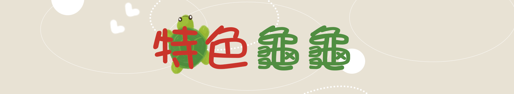
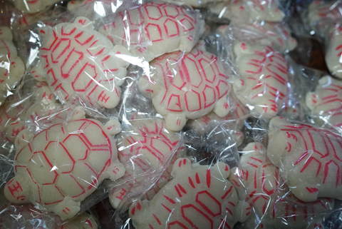
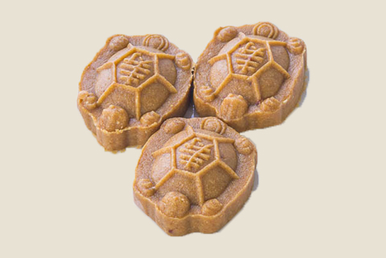
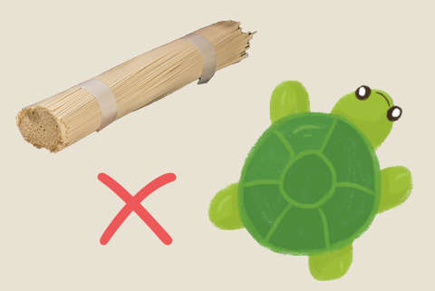
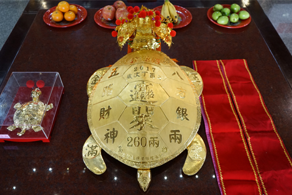
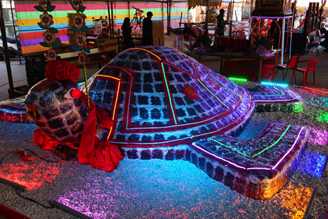
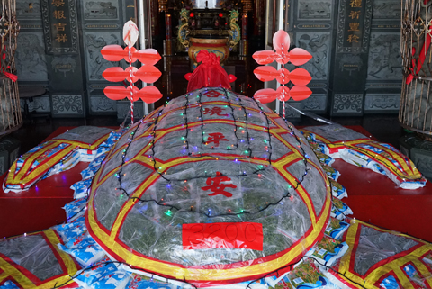
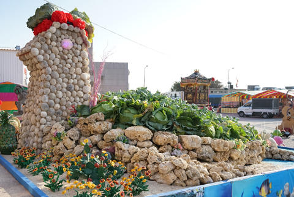
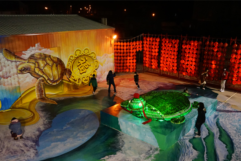
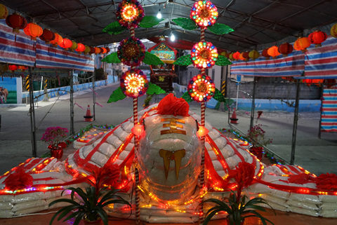

Loading...
首頁
關於乞龜
特色龜龜
龜龜比賽
龜龜慈善家

肪片龜

解說
肪片龜
元霄節時，廟裡總會看到許多的供品，其中肪片龜為澎湖乞龜祭拜時的供品史祖，通常只要向神明擲筊一個聖杯就可以免費帶它們回家享用。 只使用糯米粉和糖做成的肪片龜，龜殼中刻劃著精美的紋路，就算是平常不吃甜食的人也會愛上的精緻甜點!
餅龜

解說
餅龜
餅龜是一種乞龜的通稱，所有由糕餅製成的乞龜跟由糕餅組成的乞龜都可以稱為餅龜，餅龜在眾多種類的乞龜中是最為常見的，也是造型最多的一種。由糕餅製成可以很輕易的做出烏龜造型，而且可以很簡單的做出變化。除此之外，餅龜有各式大小也是造福各種人數的家庭，不用擔心會吃不完餅龜呢~~
麵線龜

解說
麵線龜
澎湖的西衛自清代以來，氣候跟地理環境有優勢，聚集不少手工麵線師傅落腳，於是便有「西衛麵線」之名，而在澎湖的乞龜中也因應這個特產，推出了現在家喻戶曉的麵線龜，不但如此，麵線也有長壽的寓意，被稱為長壽麵，用麵線作為平安龜的材料是再好不過的了。同時，麵線龜也與米龜一樣有分送給別人的習俗，不但可以分享福氣，還能幫助到需要的人呢。
金龜

解說
金龜
廟里陳列著一隻隻散發耀眼金光的烏龜，沒錯，那正是用黃金製成的乞龜，選用黃金製成的原因是，黃金在華人心中具有永久富貴的好寓意，並且他不易氧化，可以有很高的紀念性，再者，純金製成的乞龜也是一大噱頭。這些乞龜皆為銀樓老闆親自打造而成，價值不菲，每隻烏龜身上都會寫著數字代表它的重量，只要擲筊比賽中獲勝，就能將它帶回家，之前澎湖喜來登飯店老闆就曾經獲勝，之後依循古禮，將它迎回飯店放置，非常具有記念意義！
紫菜龜

解說
紫菜龜
擁有澎湖北海無人島紫菜採集權的白沙赤崁龍德宮，推出了運用特產的巨型紫菜龜，運用數以千計的空殼嶼採集的紫菜，搭配白米為底，砌疊成7500斤紫菜米包龜。這隻乞龜是先用米當基座，外觀上再貼滿紫菜，空殼嶼紫菜是由廟方統一雇人登島採集，在元宵過後依照人口，直接發放給赤崁村民。
海菜龜

解說
海菜龜
元擁有澎湖北海無人島紫菜採集權的白沙赤崁龍德宮，推出了運用特產的巨型紫菜龜，運用數以千計的空殼嶼採集的紫菜，搭配白米為底，砌疊成7500斤紫菜米包龜。這隻乞龜是先用米當基座，外觀上再貼滿紫菜，空殼嶼紫菜是由廟方統一雇人登島採集，在元宵過後依照人口，直接發放給赤崁村民。
高麗菜龜

解說
高麗菜龜
在悠久的乞龜活動中，融入當地的特產，用一顆顆新鮮的高麗菜並輔以老虎石堆疊成一隻巨大的乞龜，目的是祈求來年高麗菜的豐收，並且可以行銷當地的特產，如果能擲到一個聖杯，就可以把新鮮的高麗菜帶回去，有興趣的遊客可以來試試看喔，說不定可以得到神明的眷顧，帶回高麗菜呢！
啤酒龜

解說
啤酒龜
元澎湖乞龜文化，在輸人不輸陣的壓力下，從單純的乞龜一路發展出各式造型乞龜，創意不斷，近幾年更推出了「啤酒龜」花樣。藝術家陳扶氣以150箱的綠色瓶裝啤酒，加上用20箱的紅色瓶裝啤酒，相當於4080瓶啤酒，黏疊成乞龜，這隻乞龜的主題的是大家熟知的「龜兔賽跑」，廟方表示，以酒製成乞龜並不是鼓勵大家喝酒，所以這隻啤酒龜只供參觀不開放求乞。
米龜

解說
米龜
是用數以萬斤的米慢慢的堆疊而成乞龜，眼睛及身上使用著絢爛LED燈進行裝飾，好不美麗。在中華文化之中，米為五穀雜糧之首，早期人們祭拜米是因為米的珍貴，並且為了祈求子孫都能吃得飽飽的，之後便一直傳承下來，用米製成的乞龜也是借用這個寓意。在澎湖，乞得乞龜的人會將他拆完分發給鄰里鄉親及需要的人，一是乞求收到的人的平安，二是願將這份由神明給與的祝福再還給社會。